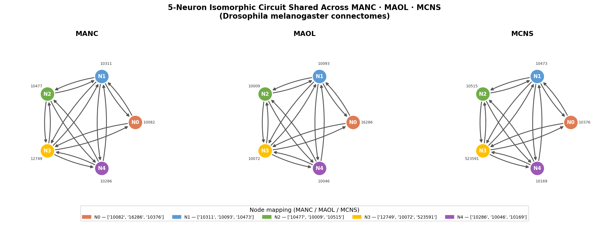

The isomorphic circuit comprises 5 neurons (N0–N4) with 16 directed edges (80% of the maximum possible density for a 5-node directed graph without self-loops). Neuron identifiers in each dataset are listed below.
| Abstract node | MANC ID | MAOL ID | MCNS ID | In-degree (circuit) | Out-degree (circuit) |
|---|---|---|---|---|---|
| N0 | 10082 | 16286 | 10376 | 2 | 2 |
| N1 | 10311 | 10093 | 10473 | 4 | 4 |
| N2 | 10477 | 10009 | 10515 | 3 | 3 |
| N3 | 12749 | 10072 | 523591 | 4 | 4 |
| N4 | 10286 | 10046 | 10169 | 3 | 3 |
The shared edge structure (expressed as abstract node indices) is:
N1 and N3 act as hubs — bidirectionally connected to every other node (degree 4/4). N2 and N4 are intermediate nodes — mutually connected and linked to both hubs but not to N0. N0 is a peripheral node connected exclusively to the two hubs.

The MAOL (Male Adult Optic Lobe) dataset is selected for detailed biological analysis. The five constituent neurons can be visualised in the FlyWire Codex 3D mesh viewer at the following URL:
https://codex.flywire.ai/app/viewer?ds=male_ol_v1&segments=16286,10093,10009,10072,10046
Within MAOL, the circuit neurons span a wide degree range in the full connectome graph, reflecting major projection neurons typical of the optic lobe:
| MAOL ID | Abstract node | Global in-degree | Global out-degree |
|---|---|---|---|
| 10009 (N2) | Hub partner | 11,496 | 9,619 |
| 10093 (N1) | Hub | 5,515 | 11,215 |
| 10072 (N3) | Hub | 4,322 | 10,421 |
| 10046 (N4) | Intermediate | 952 | 10,883 |
| 16286 (N0) | Peripheral | — | — |
The high global out-degrees of N1 (10093) and N3 (10072), each exceeding 10,000 synaptic outputs, are consistent with transmedullary neurons (Tm cells) or medulla intrinsic neurons (Mi cells) — cell classes known to broadcast visual signals widely across the optic lobe and into the central brain [3, 4].
The circuit topology — two recurrent hubs flanking two symmetric intermediate nodes and one peripheral satellite — matches the architecture of winner-take-all or competitive normalization circuits studied in visual cortex [5] and computationally proposed for direction-selective neural circuits in Drosophila [6].
In the optic lobe, recurrent excitatory loops between high-degree medulla neurons are thought to underlie contrast gain control and temporal filtering of visual inputs [4]. The bidirectional connections between N1 and N3 (the two hubs) and their shared connectivity to N2 and N4 suggest a recurrent amplification loop that could sustain activity across both a feedforward path (N0→N1/N3→N2/N4) and a feedback path (N2/N4→N1/N3→N0).
Critically, the same abstract topology recurs in the ventral nerve cord (MANC) and the full central nervous system (MCNS). This cross-neuropil conservation implies the motif is not specific to visual processing but may represent a canonical recurrent microcircuit in the male fly nervous system — potentially implementing a common computational primitive (such as persistent activity, local oscillation, or signal normalisation) in anatomically distinct contexts [7].
A testable hypothesis: silencing hub neurons N1 or N3 in the optic lobe (MAOL 10093 or 10072, targeted via split-GAL4 lines) should disrupt the sustained response properties of N2 and N4 during looming or motion stimuli, without abolishing initial transient responses — a signature of recurrent amplification.